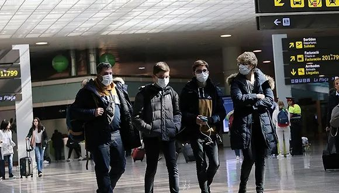

意大利确诊229例死亡7例，韩国检测“新天地”全体信众
原文链接 备份链接 意大利米兰街头。图片来源：半岛电视台 “ 全球新冠肺炎疫情播报，持续更新。 ” （本文持续更新中，点击左下角阅读原文，实时跟踪国际疫情动态。文中段首所示时间为本文更新时间。） 意大利 0800 【意大利新冠肺炎死亡病例 …
图片来源：半岛电视台
“
全球新冠肺炎疫情播报，持续更新。
”
（本文持续更新中。文中段首所示时间为本文更新时间。）
0800【确诊病例升至1694例，总理签署新疫情防控法令】
截至当地时间1日22点，意大利累计确诊病例上升至1694例。另死亡41例。总理孔特签署新疫情防控法令，规定在疫情严重的地区继续暂停集会、体育和其他各类竞赛活动、学校停课至3月8日。同时重新开放博物馆，和可以提供送至餐桌服务的咖啡馆、餐馆、酒吧。
0800【新冠入侵加勒比海，多米尼加确诊首例】
加勒比海岛国多米尼加出现首起确诊病例。卫生当局星期天（1日）通报，患者是一名62岁意大利男性游客，他在2月22日抵达多米尼加。
0800【死亡病例增至22人，“新天地”教主被起诉犯杀人罪】
韩国疾病管理本部3月1日晚上发布的最新消息指出，当晚有两名新冠确诊病人死亡，这使该国的死亡病例总计达22人。截至1日下午4时，韩国累计确诊3736例。
韩国首尔1日以杀人罪、伤害罪、违反传染病预防管理相关法律为由，向首尔中央地方监察厅起诉新天地教会教主李万熙，以及教会十二支派的支派长。
首尔方面表示，李万熙等人拒绝病毒检测，并在给政府提交的教徒名单中故意遗漏和隐瞒，阻碍防疫部门工作。这在刑法上属于杀人罪及伤害罪，并涉嫌违反传染病预防法。韩国中央防疫对策本部副本部长权埈郁同时表示，中央防疫对策本部已经通过法务部确认，韩国新天地教会的部分信徒在今年1月曾到访过武汉。
0800【确诊增长5例，总数增至74例】
据美国有线电视新闻网报道，截至当地时间3月1日18时，美国累计新冠肺炎确诊病例74例，较24小时前。其中美国本土确诊病例27例，从日本“钻石公主”号和中国武汉的撤侨人员中分别确诊44例和3例。新增5例中，1例来自罗德岛州，该患者二月份有意大利旅行史；2例来自华盛顿州；1例来自伊利诺伊州；1例来自加州圣克拉拉县，患者为该县此前一确诊病例的家属。
0800【累计确诊病例增至130例，72例为群聚或连锁感染】
3月1日晚，法国卫生总局局长萨洛蒙在例行发布会上表示，截至当天16点，法国累计新冠肺炎确诊病例增至130例。其中12例治愈，2例死亡，116例仍在隔离治疗，9例病情严重。
在这130例确诊病例中，有72例属于法国境内群聚或连锁感染，35例在法国以外的地区感染，23例的感染路径不明。
0800【累计确诊129例，北莱茵-威斯特法伦州占半数以上】
据德国联邦疾控机构罗伯特·科赫研究所3月1日公布的数据，截至3月1日15点，德国已累计确诊新冠肺炎患者129例。
其中北莱茵-威斯特法伦州的确诊病例达74人，超过半数。
0800【苏格兰出现首例感染者，英国确诊总数增至36人】
3月1日晚，英国苏格兰地区卫生部门宣布，一名近期曾经前往意大利北部旅行的患者被检测确诊感染了新型冠状病毒，成为苏格兰地区首例感染者。
至此英国的四个地区均发现新冠病毒感染者；全境感染人数共计36人。而3月1日是英国新增确诊病例最多的一天，一共确诊13例。
0800【新增6例新型冠状病毒感染者，均有伊朗旅行史】
巴林卫生部当地时间1日下午发布公告，确认境内新增6例新型冠状病毒感染者。新增感染者中有三名巴林女性公民和和两名巴林男性公民，另有一名沙特公民，均为近期从伊朗经中转达到巴林。至此巴林境内共计已发现47例新型冠状病毒感染者。
0800【确诊病例增至27例，日内瓦病例最多】
截至当地时间3月1日晚8时，据瑞士媒体报道，瑞士新冠肺炎病例增至27例。其中，日内瓦是瑞士全境确诊病例人数最多的地区，确诊病例为8例。
日内瓦是世界卫生组织和联合国多个专门机构和国际组织总部的所在地。
0800【累计确诊19例，无重症患者】
当地时间3月1日晚，挪威公共卫生研究所表示，挪威有19例确诊为新冠肺炎，没有感染者患重病。其中有12例在东部地区，包括乌勒沃医院的5名员工。卑尔根有6例，特罗姆瑟有1例。
所有感染者都可以与国外感染者联系起来，除了在挪威感染的19名患者外，还有一名挪威学生在意大利受到感染。
0800【新增6例确诊病例，均有伊朗旅行史】
当地时间3月1日，伊拉克卫生部发布声明称，伊拉克境内新发现6例新冠肺炎确诊病例，其中2例在首都巴格达，4例在北部的苏莱曼尼亚，这些患者在近期均有伊朗旅行史，目前在卫生部下属机构接受治疗与监测。
目前，伊拉克境内感染新冠肺炎的确诊病例总数达到19例。
0800【累计确诊14例，新增四例】
据奥地利卫生部网站及奥地利媒消息，截至当地时间3月1日上午，奥地利共进行了1826次新冠病毒检测，现有确诊病例14例。
1日新增四例确诊病例，均位于维也纳，症状较为轻微。其中两名确诊病例系来自德国的游客，近期曾在德国参加狂欢节活动并接触过一名确诊患者。第三名确诊患者系36岁女性，曾于近期前往意大利米兰。第四名确诊患者系男性，感染途径暂不详。
0800【累计新冠肺炎确诊病例6例】
当地时间3月1日，《赫尔辛基新闻报》报道，芬兰国立卫生和福利研究院以及赫尔辛基和新陆区医院区联合新闻发布会上说，芬兰现已确认有6例新冠肺炎患者。新确诊2例新冠肺炎患者，一个是在校生，另一个是退休人士。
0800【确诊3例病例，有意大利旅行史】
当地时间3月2日下午，捷克卫生部长亚当·沃伊捷赫在新闻发布会上称，捷克本土确诊三名新冠肺炎感染病例。其中包括两名捷克男性，一名美国女性，所有三人近期都有意大利旅行史。据称，目前三人的病情并不严重。
0800【累计确诊74例，周日皇马和巴塞罗那对决】
当地时间3月1日下午三点，西班牙新冠肺炎患者确诊人数已达74例。排名前三风险的大区为瓦伦西亚15例、马德里14例、安达卢西亚12例。
本周日21点整（西班牙时间），西班牙将迎来最受关注的足球比赛，也是世界上最受关注的比赛之一：皇马和巴塞罗那俱乐部之间的对决。截至目前，政府没有取消比赛的计划。
0800【新增3例确诊，累计达10例】
当地时间3月1日下午，荷兰公共卫生与环境研究院表示，荷兰境内新增3例新冠肺炎确诊病例，其中有1名男性患者，2名女性患者，均居住在不同的城市。目前，荷兰卫生部门还不清楚这三名患者被感染的原因和途径。
0800【中国境外共58个国家确诊新冠肺炎7169例】
据世卫组织每日报告，截至欧洲中部时间3月1日上午10时（北京时间17时），中国（含港澳台）境外共58个国家确诊新冠肺炎7169例，死亡共计104例。与前一日报告相比，中国外新增新冠肺炎1160例，新增5个国家（阿塞拜疆、厄瓜多尔、爱尔兰、摩纳哥、卡塔尔）出现新冠肺炎病例。
未经授权 禁止转载

原文链接 备份链接 意大利米兰街头。图片来源：半岛电视台 “ 全球新冠肺炎疫情播报，持续更新。 ” （本文持续更新中，点击左下角阅读原文，实时跟踪国际疫情动态。文中段首所示时间为本文更新时间。） 意大利 0800 【意大利新冠肺炎死亡病例 …
原文链接 备份链接 【财新网】（记者 赵宁）北京大学人民医院（下称北大人民医院）有住院病人确诊为新冠肺炎的消息获得证实。与该医院相关确诊病例一共三人，分别为田某某、李某某、张某某，其中一人先由发热门诊排查，后又追溯发现了涉及医院老年科和肾 …
原文链接 备份链接 【财新网】（记者 王和岩）疫情袭来已遍布全国各省份。在距离武汉最北的省份黑龙江，聚集性疫情成为防控重点。截至2月6日24时，各地共报告新型冠状病毒感染的肺炎聚集性疫情48起、发病194人，波及或暴露630人，死亡3 …
原文链接 备份链接 根据当地时间3月1日18时意大利卫生部公布的最近数据，意大利现有新冠病毒患者1577例，死亡34例，治愈83例，累计确诊感染新冠病毒总人数为1694例，较2月29日18时新增566例，其中重症140例，新增5例死亡病 …
原文链接 备份链接 图片来源：Press TV 记者：肖恩 “ 伊朗新冠肺炎确诊病例数已超过日本，在海外国家中仅次于韩国和意大利。 ” 伊朗卫生部3月1日通报称，24小时内，该国新增确诊病例385例，累计978例，其中死亡54例，治愈出 …